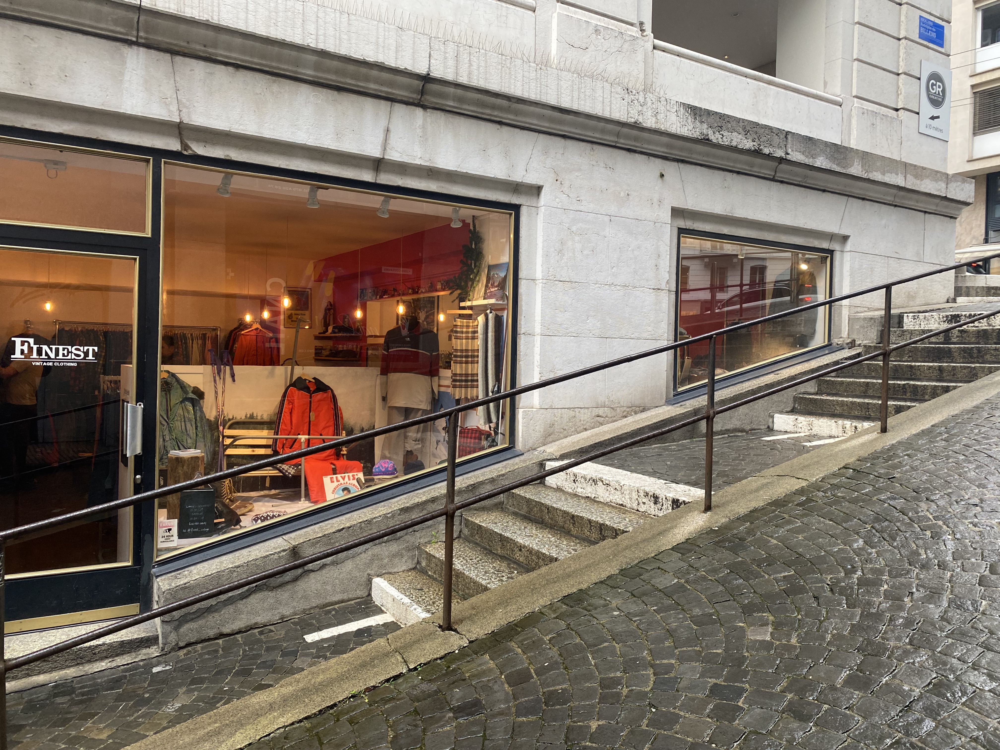
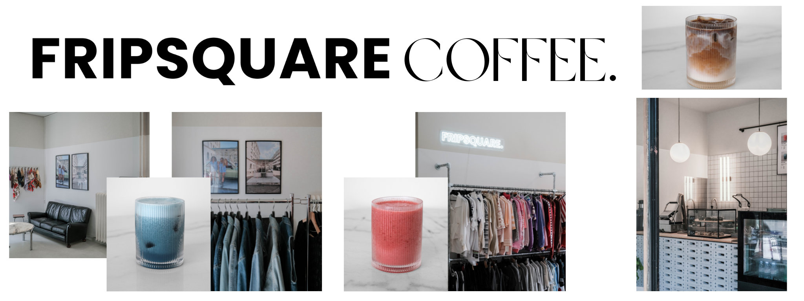
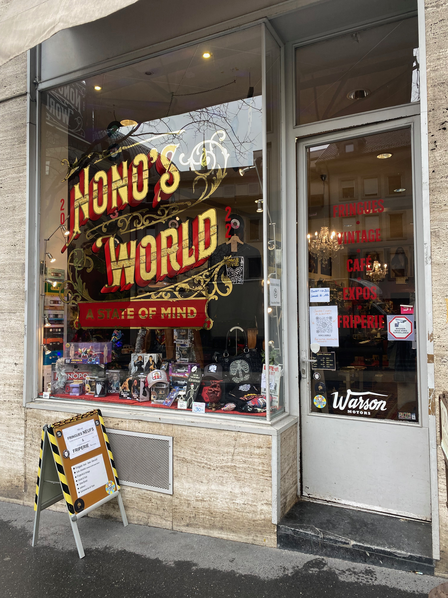

Notre Top 5
Voici un petit top 5 de nos friperies préferées. Ça peut très utile pour ceux qui ne savent pas ou commencer ! Nous donnerons également les points positifs de chacunes, pour vous donner un petit aperçu !
- première de notre classement est Finest Vintage 
- suivit pa la deuxième place : Fripsquare 
- la troisième est nono's world 
- Throwback Vintage est notre quatrieme place
- Et enfin Maniak
L'ambiance est vraiment agréable. Les habits sont de bonnes qualité et ce sont vraiment des habits vintage.
C'est sympatique d'avoir en même temps une friprie avec un choix d'habits interessant et un caffé avec. Il y a aussi la posibilité de commendé les vêtemants en ligne.
Cette boutique a vraiment son propre univers et la vibe est unique. Malheureusemant ce n'est pas entièrement une friperie ce qui la fait decendre un peu dans le classemant.

Les habits sont peu cher et on une vrai vibe vintage.

Et oui car même si Maniak n'est pas connu principalemant pour sa partie frieperie, on peut y trouver un large choix de vêtement de seconde main de toute sorte et de tout genre.